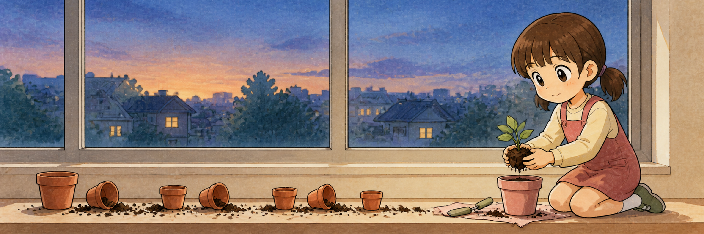
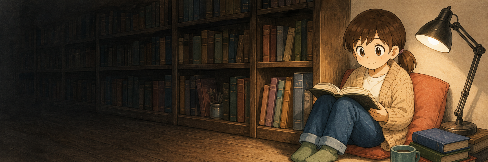
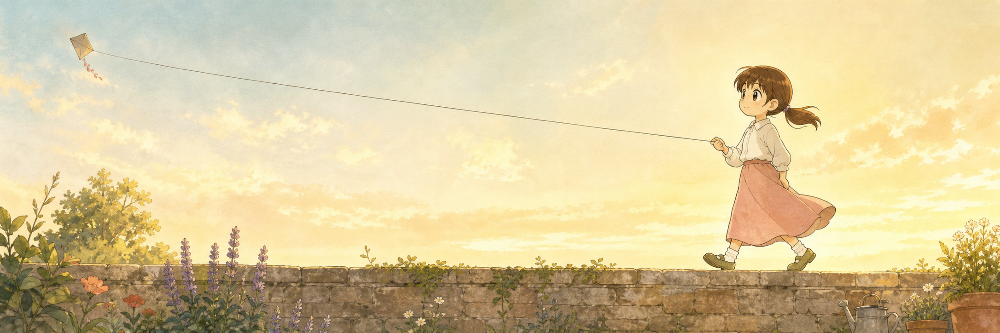
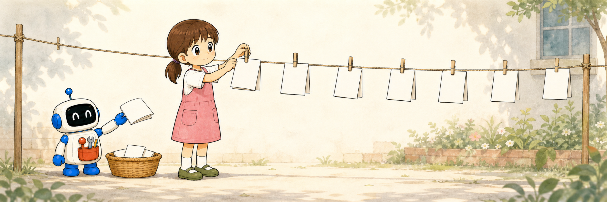

Not part of any edition. Licensed tail prompts, canon sheet attached. Click an image for full size.
Pinafore over a seasonal long-sleeve (licensed), ponytail and bangs hold.

Cardigan and jeans, a few years older; identity anchors (ponytail, bangs) hold. Note: rendered 724px tall — the old short-tail issue.

Blouse and long pink skirt (licensed), full-strip kite string.

Strict-canon Flopaz and a fully on-model Maro handing her notes.
